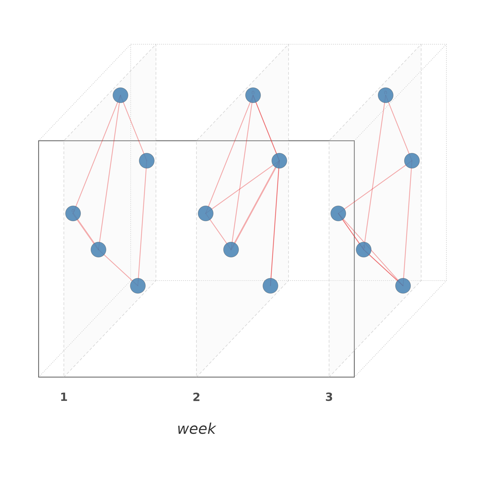

Displays a network at different time points as vertical planes inside a 3D oblique-projection box, with time flowing left to right. Each network plane extends into the depth of the box.
Usage
plot_temporal(
x,
time = NULL,
slices = NULL,
cumulative = FALSE,
labels = NULL,
layout = "spring",
node_size = 2.5,
node_color = "steelblue",
node_shape = 21,
node_border = "gray30",
edge_color = "#E41A1C",
edge_width = 1.5,
edge_alpha = 0.35,
plane_color = "gray92",
plane_alpha = 0.2,
plane_border = "gray60",
plane_lty = 2,
box = TRUE,
box_color = "gray40",
connections = FALSE,
connection_color = "gray50",
connection_alpha = 0.15,
minimum = 0,
show_labels = FALSE,
label_size = 0.4,
title = NULL,
angle = c(1, 0.7),
seed = 42,
...
)Arguments
- x
An edge list data frame with columns
from,to, and a time column, OR acograph_network(reads time from stored data), OR a named list of network objects.- time
Character. Name of the time column.
- slices
Integer or NULL. Number of equal-width time bins. Default NULL uses unique time values.
- cumulative
Logical. If TRUE, edges accumulate. Default FALSE.
- labels
Character vector of layer labels. Default auto.
- layout
Character or matrix. Character values currently use a shared Fruchterman-Reingold/spring layout; a matrix supplies shared coordinates. Default
"spring".- node_size
Numeric. Node size. Default 2.5.
- node_color
Character or vector. Node fill color. A single color applies to all layers, or a vector of length
n_layersfor per-layer colors. Default"steelblue".- node_shape
Integer. Point shape (
pch). Default 21 (filled circle).- node_border
Character. Node border color. Default
"gray30".- edge_color
Character or vector. Edge color (single or per-layer). Default
"#E41A1C".- edge_width
Numeric. Base edge width. Actual width scales by weight. Default 1.5.
- edge_alpha
Numeric. Edge transparency (0-1). Default 0.35.
- plane_color
Character or vector. Plane fill color (single or per-layer). Default
"gray92".- plane_alpha
Numeric. Plane fill transparency (0-1). Default 0.2.
- plane_border
Character. Plane border color. Default
"gray60".- plane_lty
Integer. Plane border line type. Default 2 (dashed).
- box
Logical. Draw 3D bounding box. Default TRUE.
- box_color
Character. Box edge color. Default
"gray40".- connections
Logical. Draw lines connecting same nodes across planes. Default FALSE.
- connection_color
Character. Default
"gray50".- connection_alpha
Numeric. Default 0.15.
- minimum
Numeric. Minimum edge weight to display. Default 0.
- show_labels
Logical. Default FALSE.
- label_size
Numeric. Label text size. Default 0.4.
- title
Character or NULL. Plot title. Default NULL.
- angle
Numeric vector of length 2:
c(dz_x, dz_y)controlling the oblique projection shear. Defaultc(1.0, 0.7).- seed
Integer or NULL. Default 42.
- ...
Additional arguments (currently unused).
Examples
set.seed(1)
edges <- data.frame(
from = sample(LETTERS[1:5], 30, replace = TRUE),
to = sample(LETTERS[1:5], 30, replace = TRUE),
week = sample(1:3, 30, replace = TRUE))
cograph::plot_temporal(edges, time = "week")
